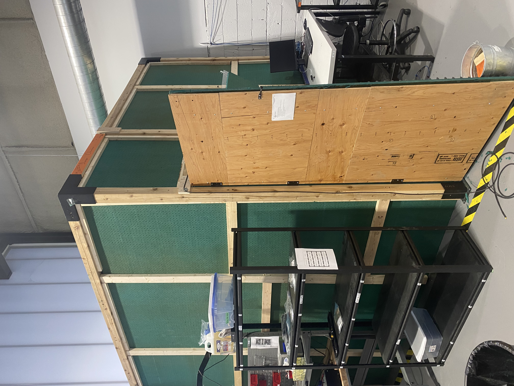
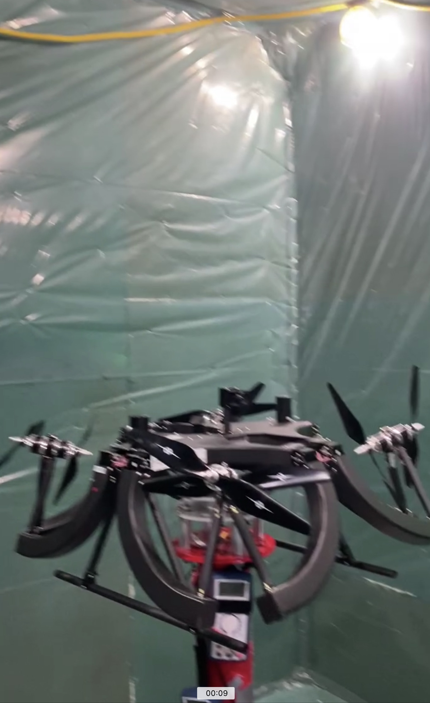

The Anechoic Drone Testing Chamber was developed to provide a controlled environment for acoustic testing
and noise reduction analysis of drones. Built with a focus on precision and practicality, this chamber
combines soundproofing materials with a sturdy design to achieve superior performance.


Project Highlights
- Size: 10x10x10 ft, providing ample space for drones and testing equipment.
- Materials: Constructed with wood, sound-dampening panels, and plastic sheeting for
optimal noise reduction.
- Soundproofing: Achieved a -20% dB noise reduction, minimizing external sound
interference.
- Completion Time: Designed and built in just 1 month, from concept to execution.
- Durability: Sturdy design ensures long-term reliability in rigorous testing
conditions.
- Applications: Ideal for noise reduction during product testing and precision
acoustic measurements.
Back to Portfolio